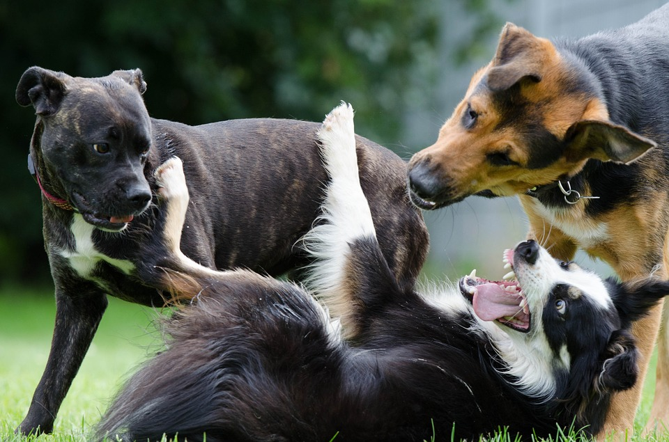

SOGGIORNO
Asilo
Siamo orgogliosi di offrire un programma di asilo davvero unico nell'area di Tento. I nostri ospiti godono ogni giorno di un ambiente divertente, amichevole e sicuro. Questo programma consente al tuo cane di socializzare ed esercitarsi, tutto sotto la supervisione del nostro personale altamente qualificato. I cani sono selezionati per i gruppi di asilo in base alle loro dimensioni, temperamento e stile di gioco per garantire la migliore esperienza a tutti i nostri ospiti. Ovviamente i cuccioli avranno un'area a loro dedicata. I nostri cani da asilo nido hanno accesso ai nostri spazi esterni ed interni tutto l'anno.
Pensione per cani
Il nostro programma di pensione per cani è perfetto nel caso non potete tenere con voi il vostro amico peloso per vari giorni. Abbiamo un personale altamente qualificato per prendersi cura del vostro cane al meglio, tra gioco, cibo e cure veterinarie nel caso ne avesse bisogno.
- Suite interne di lusso singole, doppie, triple, quadruple.
- Recinte esterne diurne singole, doppie o comunicanti.
- Riscaldamento autonomo e condizionatori d'aria.
- Aree di addestramento e gioco.
- Squadra dedicata agli amanti dei cani, affiancata ad addestratori esperti.
- Accesso alla pratica veterinaria in loco per la somministrazione dei farmaci
| Suite singola | Suite doppia | Suite tripla | Suite quadrupla | |
|---|---|---|---|---|
| Giorno lavorativo |
€15 | €25 | €30 | €40 |
| Giorno festivo |
€20 | €30 | €40 | €50 |
Pensione per gatti
Il nostro programma di pensione per gatti è perfetto nel caso non potete tenere con voi il vostro amico peloso per vari giorni. Abbiamo un personale altamente qualificato per prendersi cura del vostro gatti al meglio, tra gioco, cibo e cure veterinarie nel caso ne avesse bisogno.
Sappiamo che i gatti hanno un udito e un olfatto eccezionali, quindi abbiamo un'area dedicata ai gatti dove sono tenuti lontani da cani e altre distrazioni. Questa area è stata creata per aiutare il tuo gatto a rilassarsi, poiché un nuovo ambiente può spesso portare a stress e ansia.
- Suite interne di lusso singole, doppie, triple, quadruple.
- Suite esterne diurne singole, doppie o comunicanti.
- Riscaldamento autonomo e condizionatori d'aria.
- Aree di allenamento, rampe, tiragraffi e giocattoli
- Squadra dedicata agli amanti dei gatti.
- Accesso alla pratica veterinaria in loco per la somministrazione dei farmaci
| Suite singola | Suite doppia | Suite tripla | Suite quadrupla | |
|---|---|---|---|---|
| Giorno lavorativo |
€10 | €15 | €25 | €35 |
| Giorno festivo |
€15 | €25 | €35 | €45 |